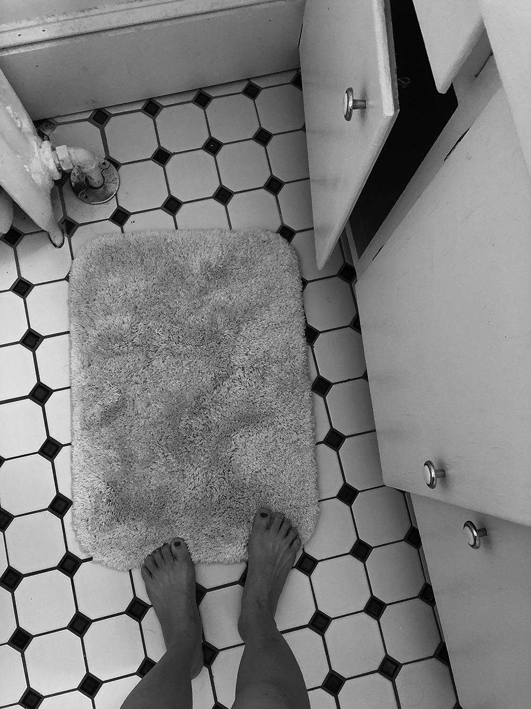
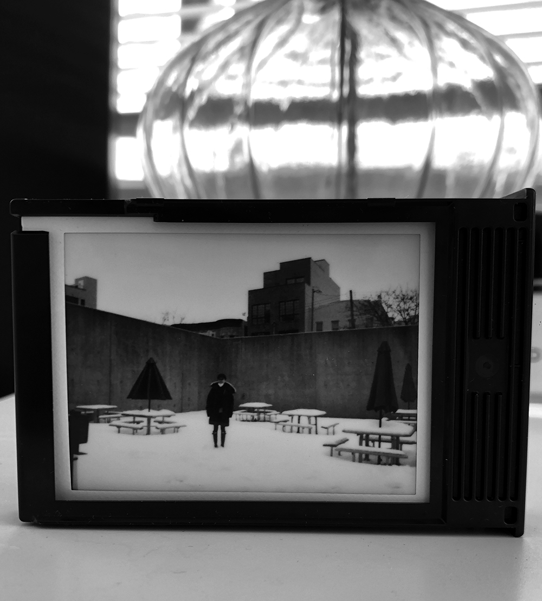
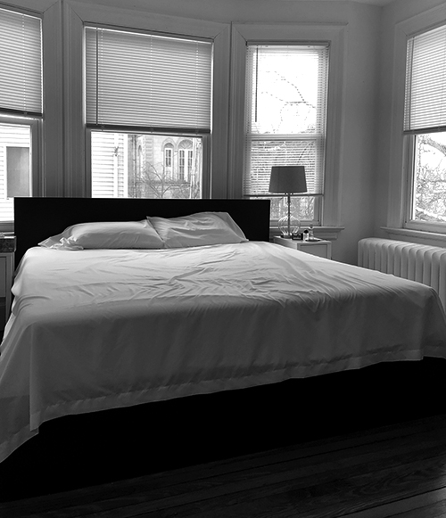

Website as a room. Before you move in, the area is empty as the blank Html in the sublime. Then somehow, with my intuition, I’ll firgure out where to put my bed, nightstand, lamp, desk, shelf, and chair. Me, like a cursor hovering in this room each day.
On my bedside table, there is a box containing Polaroid photo paper. I use it as a photo frame. Inside are photos taken by my friends. To make up a frame is different from buying a frame. And to embed your photos in Html is different from looking at them on iPhone. Suddenly, they’re exposed to the world effortlessly.
Room by nature is a private space; website is the opposite. The bed is your website's structure; once you decided the placement, it’s hard to change. Then all other furniture will occupy its place according to its furnishings.
When you tidy up your room, put on dreamy, nostalgic music, light some good smells, and thoroughly enjoy the heaven that exists in this intimate, personal space of your own design. So the sound can always perk up a website. A room is your home; a website is a home to communities, thoughts and approaches.